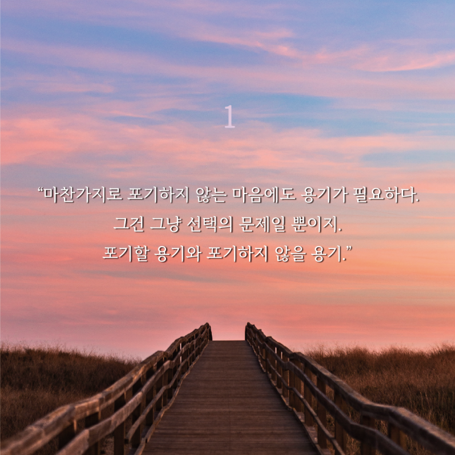
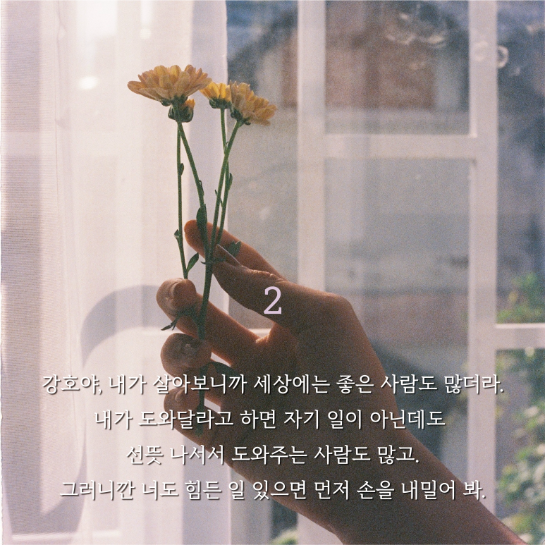
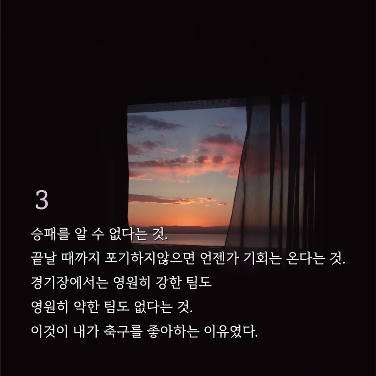
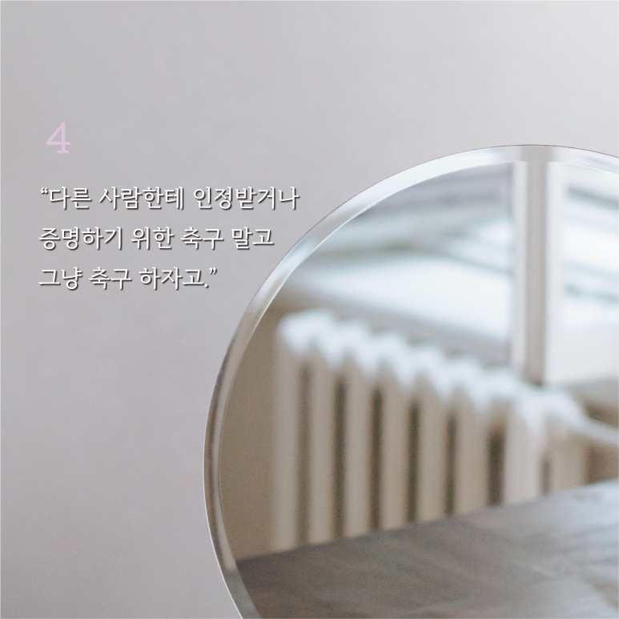

책 소개하기
제목:
우리들의 빌드업
지은이_ 최민경
목차
1. 줄거리
2.인상 깊은 구절 또는 장면과 그 까닭
3. 감상평
4. 추천평
줄거리
축구밖에 모르던 주인공 '강호'는 중학교 연습경기에서 친구 '태수'에게 무리한 태클을 걸어버린다. 실수였지만,
살인 태클 C군이라는 낙인이 찍혀 방황하다 비행까지 저지르게 된다. 어렵게 진학한 고등학교에서 여러 인연을 만나고,
새로운 코치 고영표 선생님도 만나게 된다. 강호는 다시 축구를 시작할 기회 앞에서 망설인다.
그러나 강호는 더이상 C군으로 살지 않겠다고, 자신의 이름을 되찾겠다고 다짐하며 축구를 다시 시작한다.
<책 이미지>
인상 깊은 구절 또는 장면과 그 까닭

이 구절은 우리에게 '포기'와 '비포기' 모두 각각의 상황에서 필요한 용기이며, 그 선택은 우리가 내리는 중요한 결정임을 일깨워 준다. 그러므로
끊임없이 도전하는 용기와 때로는 현명하게 물러나는 용기, 두 가지 모두 우리의 삶에서 필수적인 요소임을 깊이 깨닫게 하는 메시지라고 생각하여 인상깊다고 느꼈다.

이 구절은 단순히 따뜻하거나 예쁜 말이 아니라, 살아 있는 사람의 마음과 진심이 느껴지는 말이라고 생각한다.
약해도 괜찮고, 힘들면 말해도 되고, 손을 내밀면 의외로 많은 손이 그 손을 잡아줄 거라는 신뢰도 담겨 있다.
그 자체로 위로이고, 동시에 관계를 맺는 데 필요한 작지만 중요한 용기를 북돋는 말이라고 생각하여 인상깊다고 느꼈다.

이 구절은 단지 축구에 대한 애정을 표현하는 게 아니라, 삶을 살아가는 태도에 대한 깊은 통찰을 담고 있다고 생각한다.
그래서 이건 “왜 축구를 좋아하는가”에 대한 대답이자, 어쩌면 “왜 아직도 삶을 포기하지 않는가”에 대한 대답일 수도 있다고 생각하여 인상깊다고 느꼈다.

]
이 구절은 타인의 기준과 기대에 얽매인 삶에서 벗어나고자 하는 마음, 그리고 자기 자신으로서 존재하고 싶은 욕망이 담긴 말이라고 생각한다.
"그냥 축구하자고"는 말 그대로 들리지만, 사실은 **“그냥 나답게 살자고”**라는 말과 다르지 않다고 느껴진다.
인정이 아닌 열정으로, 비교가 아닌 몰입으로.
그렇게 살고 싶은 모든 이들에게 위로이자 다짐 같은 문장이라고 생각하여 인상깊다고 느꼈다.
감상평
우리들의 빌드업 키워드는 #축구 #소년원 이다.
특히, 소년원을 다녀온 주인공이라는 설정이 독특하고 흥미롭게 다가왔다.
시작 부분에 소년원에 다녀온 주인공 강호의 모습을 보여주어
흥미를 지니고 끝까지 쉽게 읽을 수 있던 책이었다.
강호는 축구를 좋아하지만, 태수에 대한 죄책감으로 축구를 포기한 채
태수가 시키는 일을 뭐든지 하는 소위 '따까리'와 같은 삶을 살았다.
그러나 축구로서 다시 태수와 화해를 하게 된다.
그 부분이 조금 아쉽게 여겨지기도 했다.
소년원 퇴소 청소년이라는 점과 그 소년이 학교폭력을 당한다는 점에서 흥미롭고
술술 잘 읽혔다.
주인공이 친구와 화해하고 성장하는 과정에서
태수와 주인공을 둘러싸고 '민아'라는 여자 아이가 등장하는데
민아와 태수 사이의 이야기가 구체적으로 드러나지 않아서 아쉬웠다.
태수의 감정 변화가 조금 급작스럽게 발생하고 급하게 화해한 느낌이 들었다.
하지만, 소재가 흥미롭고 술술 잘 읽히는 재미있는 도서였다.
추천평
《우리들의 빌드업》은 실수와 낙인으로 멈춰 섰던 한 소년이 스스로의 이름을 되찾아가는 빌드업의 과정을 섬세하게 그려냅니다.
성장이란 단번의 도약이 아니라, 넘어지고 다시 일어나는 반복 속에서 단단해지는 것임을 이 소설은 조용히, 그러나 강하게 일깨워줍니다.
이 책은 한때
"자신을 잃어버렸던 사람, 누군가의 인정보다 자기 자신에게 진실하고 싶은 사람, 그리고 다시 시작하고자 마음먹은 모든 이"
에게 따뜻하고도 묵직한 위로가 될 것이라고 생각하여 추천한다.